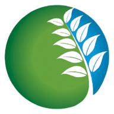

CÓBANO Cloud
Inventarios de campo, conectados con la naturaleza.
☰

CÓBANO Cloud
Inventarios forestales y biológicos
Salir
? Ayuda
↻ Actualizar
⇩ Instalar
⌂ Inicio
GUÍA RÁPIDA
Cómo usar CÓBANO Cloud
×
Crea un proyecto.
Elige Forestal o Biología y escribe un nombre que identifique el predio o estudio.
Prepara los sitios.
Sin archivos, agrégalos manualmente y usa GPS; con puntos, importa KML/KMZ o un ZIP SHP y la app intentará detectar el número; con polígono, impórtalo y calcula o define la cantidad de sitios.
Captura los datos.
Abre un sitio y agrega árboles u observaciones. Escribe el nombre común o científico para consultar sugerencias. La fecha y hora se asignan automáticamente a cada árbol y registro biológico; aparecen únicamente en la exportación. Usa ⧉ para copiar el registro anterior y cambiar las mediciones.
Guarda evidencia y revisa resultados.
Toma fotos desde el sitio, permite el GPS para añadir coordenadas y consulta Mapa y Resultados. Los cálculos dependen de que las unidades y los criterios sean correctos.
Protege la información.
Descarga respaldos JSON con frecuencia. Los proyectos invitados requieren iniciar sesión con Gmail y conectividad a Firebase para sincronizar entre teléfonos.
Catálogo de especies.
En línea, CÓBANO consulta el autocompletado de EncicloVida/CONABIO y NaturaLista (iNaturalist). Los taxones que selecciones se guardan en el catálogo local; la identificación automática nunca sustituye la revisión de campo.
Catálogo CONABIO
NaturaLista
Entendido